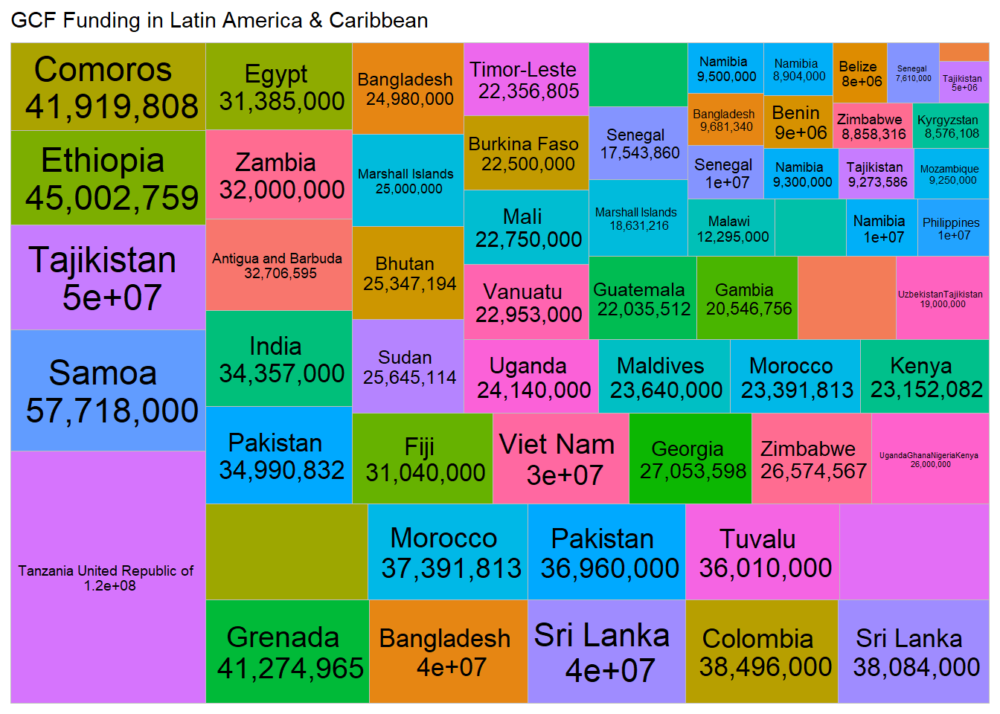

Chapter 5 Working excel data
Steps;
5.0.1 Install packages
#install.packages(c("readxl", "magrittr", "knitr", "kableExtra", "DT", "plotly", "dplyr", "ggplot2", "treemapify"))5.0.2 Call libraries for the installed packages
library(readxl)
library(magrittr)
library(knitr)
library(kableExtra)
library(DT)
library(plotly)
library(dplyr)
library(ggplot2)
library(treemapify)5.0.3 Import excel table from local drive
- From the Environment window, click ‘Import Dataset’
- From the drop down menu, select ‘From Excel’
- A new window opens; use this to browse to your target excel file and select it
- In case of multiple worksheets in your excel file, you may specify
- the name or number of worksheet you are interested in. Otherwise, the first sheet is imported by default
- Click ‘Import’ on the bottom right of the window
- Your file should appear in the global environment
- Copy the code from your console into your code environment (you may change the name of your data object to make it shorter or more descriptive)
- Run code
- Click on the ‘play’ icon to view data attributes or
- Click on the data object or table sign on the far right of your data set name to view the data
gcf<-read_excel("C:\\Users\\Esther Makabe\\NAP_Progress_Aggregate\\Open_NAPs_Database.xlsm", sheet = "GCF")5.1 Build Tables
5.1.1 Static table
- Open a new code chunk
- Install packages DT and magrittr
- Load their libraries
- Call ‘datatable’ function by typing in ‘datatable ()’ # autofill is your friend
- Hover over the function to see parameters required or go to the ‘Help’ tab and search ‘datatable’ to see further details on its application.
- Fill in details as below
kable(gcf,caption = 'GCF Funding')%>%
kable_styling(bootstrap_options = c('condensed', 'bordered'),fixed_thead = TRUE, font_size=10, repeat_header_continued = TRUE)| Approved Ref | countryname | Region | Theme | Project Name | Sector | Assess modality | Total GCF Funding | Total Co-Financing | Approval Date | Disbursements | Duration (Months) | Funding Type | Total Value |
|---|---|---|---|---|---|---|---|---|---|---|---|---|---|
| FP133 | Antigua and Barbuda | Latin America and the Caribbean | Adaptation | Resilience to hurricanes in the building sector in Antigua and Barbuda | Public | Direct | 32706595 | 13458035 | 8/21/2020 | – | 72 | Grants | 46164630 |
| FP061 | Antigua and BarbudaDominicaGrenada | Latin America and the Caribbean | Adaptation | Integrated physical adaptation and community resilience through an enhanced direct access pilot in the public, private, and civil society sectors of three Eastern Caribbean small island developing states | Public | Direct | 20000000 | 2569360 | 3/1/2018 | $3,000,000.00 | 48 | GrantsUndefined | 22569360 |
| SAP003 | Bahrain | Asia-Pacific | Adaptation | Enhancing climate resilience of the water sector in Bahrain | Public | International | 2320388 | 0 | 10/20/2018 | $906,500.00 | 60 | Grants | 2320388 |
| FP004 | Bangladesh | Asia-Pacific | Adaptation | Climate Resilient Infrastructure Mainstreaming (CRIM) | Public | International | 40000000 | 41001500 | 11/5/2015 | $150,000.00$2,830,000.00 | 72 | Grants | 81001500 |
| FP069 | Bangladesh | Asia-Pacific | Adaptation | Enhancing adaptive capacities of coastal communities, especially women, to cope with climate change induced salinity | Public | International | 24980000 | 8000000 | 3/1/2018 | $4,735,682.00 | 72 | Grants | 32980000 |
| SAP008 | Bangladesh | Asia-Pacific | Adaptation | Extended Community Climate Change Project-Flood (ECCCP-Flood) | Public | Direct | 9681340 | 3644400 | 11/14/2019 | $2,161,662.00 | 48 | GrantsSubordinated Loansin-kind | 13325740 |
| FP101 | Belize | Latin America and the Caribbean | Adaptation | Resilient Rural Belize (Be-Resilient) | Public | International | 8000000 | 12002898 | 2/28/2019 | $1,914,800.00$3,042,600.00 | 72 | GrantsSenior LoansEquity | 20002898 |
| SAP005 | Benin | Africa | Adaptation | Enhanced climate resilience of rural communities in central and north Benin through the implementation of ecosystem-based adaptation (EbA) in forest and agricultural landscapes | Public | International | 9000000 | 1000000 | 2/28/2019 | $1,065,605.00 | 60 | Grants | 10000000 |
| FP107 | Bhutan | Asia-Pacific | Adaptation | Supporting Climate Resilience and Transformational Change in the Agriculture Sector in Bhutan | Public | International | 25347194 | 32668000 | 7/8/2019 | $3,096,334.00 | 72 | Grantsin-kind | 58015194 |
| FP074 | Burkina Faso | Africa | Adaptation | Africa Hydromet Program – Strengthening Climate Resilience in Sub-Saharan Africa: Burkina Faso Country Project | Public | International | 22500000 | 2500000 | 3/1/2018 | $15,970,000.00 | 60 | Grants | 25000000 |
| FP056 | Colombia | Latin America and the Caribbean | Adaptation | Scaling up climate resilient water management practices for vulnerable communities in La Mojana | Public | International | 38496000 | 78717258 | 10/2/2017 | $7,990,110.25 | 96 | Grants | 117213258 |
| FP094 | Comoros | Africa | Adaptation | Ensuring climate resilient water supplies in the Comoros Islands | Public | International | 41919808 | 18831687 | 10/20/2018 | $2,950,847.00$8,475,242.00 | 96 | Grantsin-kind | 60751495 |
| FP135 | Comoros (the)MadagascarMauritiusSeychelles | Africa | Adaptation | Ecosystem-based Adaptation in the Indian Ocean – EBA IO | Public | International | 38000000 | 11200000 | 8/21/2020 | – | 120 | Grants | 49200000 |
| FP053 | Egypt | Africa | Adaptation | Enhancing climate change adaptation in the North coast and Nile Delta Regions in Egypt | Public | International | 31385000 | 73807000 | 10/2/2017 | $3,068,979.00 | 84 | Grants | 105192000 |
| FP058 | Ethiopia | Africa | Adaptation | Responding to the increasing risk of drought: building gender-responsive resilience of the most vulnerable communities | Public | Direct | 45002759 | 4958095 | 10/2/2017 | $3,752,016.00 | 60 | Grants | 49960854 |
| FP008 | Fiji | Asia-Pacific | Adaptation | Fiji Urban Water Supply and Wastewater Management Project | Public | International | 31040000 | 374100000 | 11/5/2015 | $4,500,000.00$16,640,000.00 | 84 | GrantsSenior LoansUndefined | 405140000 |
| FP011 | Gambia | Africa | Adaptation | Large-scale Ecosystem-based Adaptation in The Gambia: developing a climate-resilient, natural resource-based economy | Public | International | 20546756 | 4974611 | 6/30/2016 | $5,968,542.00$5,295,543.00$4,250,043.00 | 72 | Grants | 25521367 |
| FP068 | Georgia | Eastern Europe | Adaptation | Scaling-up Multi-Hazard Early Warning System and the Use of Climate Information in Georgia | Public | International | 27053598 | 43241000 | 3/1/2018 | $2,285,063.00$8,062,855.00 | 84 | Grantsin-kind | 70294598 |
| FP059 | Grenada | Latin America and the Caribbean | Adaptation | Climate Resilient Water Sector in Grenada (G-CREWS)- | Public | International | 41274965 | 7914558 | 3/1/2018 | €4,000,000.00 | 72 | Grants | 49189523 |
| FP087 | Guatemala | Latin America and the Caribbean | Adaptation | Building livelihood resilience to climate change in the upper basins of Guatemala’s highlands | Public | International | 22035512 | 15619028 | 10/20/2018 | $1,868,090.00 | 84 | Grantsin-kind | 37654540 |
| FP097 | GuatemalaEl SalvadorHondurasNicaraguaCosta RicaPanamaDominican Republic (the) | Latin America and the Caribbean | Adaptation | Productive Investment Initiative for Adaptation to Climate Change (CAMBio II) | Private | Direct | 15500000 | 12500000 | 10/20/2018 | $376,350.00 | 60 | GrantsSenior Loans | 28000000 |
| FP045 | India | Asia-Pacific | Adaptation | Ground Water Recharge and Solar Micro Irrigation to Ensure Food Security and Enhance Resilience in Vulnerable Tribal Areas of Odisha | Public | Direct | 34357000 | 131940000 | 4/6/2017 | – | 60 | GrantsSenior Loansin-kind | 166297000 |
| FP113 | Kenya | Africa | Adaptation | TWENDE: Towards Ending Drought Emergencies: Ecosystem Based Adaptation in Kenya’s Arid and Semi-Arid Rangelands | Public | International | 23152082 | 11390900 | 7/8/2019 | – | 60 | GrantsSubordinated Loans | 34542982 |
| SAP002 | Kyrgyzstan | Asia-Pacific | Adaptation | Climate services and diversification of climate sensitive livelihoods to empower food insecure and vulnerable communities in the Kyrgyz Republic. | Public | International | 8576108 | 1062117 | 10/20/2018 | – | 48 | Grants | 9638225 |
| SAP009 | Lao People’s Democratic Republic | Asia-Pacific | Adaptation | Building resilience of urban populations with ecosystem-based solutions in Lao PDR | Public | International | 10000000 | 1500000 | 11/14/2019 | $2,411,710.00 | 60 | GrantsUndefined | 11500000 |
| FP002 | Malawi | Africa | Adaptation | Scaling up the use of Modernized Climate information and Early Warning Systems in Malawi | Public | International | 12295000 | 3970000 | 11/5/2015 | $2,377,039.00$3,332,276.00$2,540,848.00$1,379,029.00 | 72 | Grants | 16265000 |
| FP007 | Maldives | Asia-Pacific | Adaptation | Supporting vulnerable communities in Maldives to manage climate change-induced water shortages | Public | International | 23640000 | 4593000 | 11/5/2015 | $3,034,330.00$12,112,446.00$6,038,072.00 | 60 | Grants | 28233000 |
| FP012 | Mali | Africa | Adaptation | Africa Hydromet Program – Strengthening Climate Resilience in Sub-Saharan Africa: Mali Country Project | Public | International | 22750000 | 8250000 | 6/30/2016 | – | 48 | Grants | 31000000 |
| FP066 | Marshall Islands | Asia-Pacific | Adaptation | Pacific Resilience Project Phase II for RMI | Public | International | 25000000 | 19131000 | 3/1/2018 | – | 62 | Grants | 44131000 |
| FP112 | Marshall Islands | Asia-Pacific | Adaptation | Addressing Climate Vulnerability in the Water Sector (ACWA) in the Marshall Islands | Public | International | 18631216 | 6116092 | 7/8/2019 | $2,323,131.00 | 84 | Grants | 24747308 |
| FP042 | Morocco | Africa | Adaptation | Irrigation development and adaptation of irrigated agriculture to climate change in semi-arid Morocco | Public | International | 23391813 | 65497076 | 4/6/2017 | €2,000,000.00 | 60 | GrantsSenior Loans | 88888889 |
| FP043 | Morocco | Africa | Adaptation | The Saïss Water Conservation Project | Public | International | 37391813 | 204327485 | 4/6/2017 | €1,970,000.00€15,000,000.00€15,000,000.00 | 60 | GrantsSenior Loans | 241719298 |
| SAP011 | Mozambique | Africa | Adaptation | Climate-resilient food security for women and men smallholders in Mozambique through integrated risk management | Public | International | 9250000 | 750000 | 11/14/2019 | – | 60 | Grants | 10000000 |
| FP023 | Namibia | Africa | Adaptation | Climate Resilient Agriculture in three of the Vulnerable Extreme northern crop growing regions (CRAVE) | Public | Direct | 9500000 | 500000 | 10/14/2016 | $3,085,000.00$3,670,000.00 | 60 | Grants | 10000000 |
| FP024 | Namibia | Africa | Adaptation | Enpower to Adapt: Creating Climate-Change Resilient Livelihoods through Community-Based Natural Resource Management (CBNRM) in Namibia | Public | Direct | 10000000 | 0 | 10/14/2016 | $427,013.00$7,231,623.00$1,832,021.00 | 60 | Grants | 10000000 |
| SAP001 | Namibia | Africa | Adaptation | Improving rangeland and ecosystem management practices of smallholder farmers under conditions of climate change in Sesfontein, Fransfontein, and Warmquelle areas of the Republic of Namibia | Public | Direct | 9300000 | 700000 | 3/1/2018 | $3,765,000.00 | 60 | Grants | 10000000 |
| SAP006 | Namibia | Africa | Adaptation | Building resilience of communities living in landscapes threatened under climate change through an ecosystems-based adaptation approach | Public | Direct | 8904000 | 160000 | 2/28/2019 | $660,000.00 | 60 | Grants | 9064000 |
| FP018 | Pakistan | Asia-Pacific | Adaptation | Scaling-up of Glacial Lake Outburst Flood (GLOF) risk reduction in Northern Pakistan | Public | International | 36960000 | 500000 | 10/14/2016 | $10,504,366.00 | 60 | Grants | 37460000 |
| FP108 | Pakistan | Asia-Pacific | Adaptation | Transforming the Indus Basin with Climate Resilient Agriculture and Water Management | Public | International | 34990832 | 12699931 | 7/8/2019 | $6,371,836.00 | 72 | Grants | 47690763 |
| SAP010 | Philippines | Asia-Pacific | Adaptation | Multi-Hazard Impact-Based Forecasting and Early Warning System for the Philippines | Public | Direct | 9999042 | 10192308 | 11/14/2019 | – | 60 | Grantsin-kind | 20191350 |
| FP037 | Samoa | Asia-Pacific | Adaptation | Integrated Flood Management to Enhance Climate Resilience of the Vaisigano River Catchment in Samoa | Public | International | 57718000 | 8000000 | 12/15/2016 | $4,766,361.00$7,377,554.00$11,649,728.00 | 72 | Grants | 65718000 |
| FP003 | Senegal | Africa | Adaptation | Increasing the resilience of ecosystems and communities through the restoration of the productive bases of salinized lands | Public | Direct | 7610000 | 546000 | 11/5/2015 | $1,915,682.00 | 48 | Grants | 8156000 |
| FP021 | Senegal | Africa | Adaptation | Senegal Integrated Urban Flood Management Project | Public | International | 17543860 | 65497076 | 10/14/2016 | €2,000,000.00 | 60 | GrantsEquitySenior Loans | 83040936 |
| FP049 | Senegal | Africa | Adaptation | Building the climate resilience of food insecure smallholder farmers through integrated management of climate risk (R4) | Public | International | 9983521 | 0 | 10/2/2017 | $2,495,900.00 | 48 | Grants | 9983521 |
| FP016 | Sri Lanka | Asia-Pacific | Adaptation | Strengthening the resilience of smallholder farmers in the Dry Zone to climate variability and extreme events through an integrated approach to water management | Public | International | 38084000 | 14000000 | 6/30/2016 | $2,867,879.00$8,287,745.00$9,264,383.00 | 84 | Grants | 52084000 |
| FP124 | Sri Lanka | Asia-Pacific | Adaptation | Strengthening Climate Resilience of Subsistence Farmers and Agricultural Plantation Communities residing in the vulnerable river basins, watershed areas and downstream of the Knuckles Mountain Range Catchment of Sri Lanka | Public | International | 39775000 | 9200000 | 3/12/2020 | – | 72 | Grantsin-kind | 48975000 |
| FP139 | Sudan | Africa | Adaptation | Building resilience in the face of climate change within traditional rain fed agricultural and pastoral systems in Sudan | Public | International | 25645114 | 15540000 | 8/21/2020 | – | 60 | Grants | 41185114 |
| FP040 | Tajikistan | Asia-Pacific | Adaptation | Tajikistan: Scaling Up Hydropower Sector Climate Resilience | Public | International | 50000000 | 78900000 | 4/6/2017 | $2,000,000.00$3,000,000.00$4,000,000.00$4,000,000.00 | 60 | GrantsSenior Loans | 128900000 |
| FP067 | Tajikistan | Asia-Pacific | Adaptation | Building climate resilience of vulnerable and food insecure communities through capacity strengthening and livelihood diversification in mountainous regions of Tajikistan | Public | International | 9273586 | 699404 | 3/1/2018 | $1,782,778.54 | 48 | Grants | 9972990 |
| FP075 | Tajikistan | Asia-Pacific | Adaptation | Institutional Development of the State Agency for Hydrometeorology of Tajikistan | Public | International | 5000000 | 5000000 | 3/1/2018 | $500,000.00$2,400,000.00 | 60 | Grants | 10000000 |
| FP041 | Tanzania United Republic of | Africa | Adaptation | Simiyu Climate Resilient Project | Public | International | 120116959 | 79883041 | 4/6/2017 | €4,000,000.00 | 60 | Grants | 200000000 |
| FP122 | TanzaniaMadagascarSouth AfricaMozambique | Africa | Adaptation | Blue Action Fund (BAF): GCF Ecosystem Based Adaptation Programme in the Western Indian Ocean | Public | International | 35087719 | 29239766 | 11/14/2019 | – | 84 | Grants | 64327485 |
| FP109 | Timor-Leste | Asia-Pacific | Adaptation | Safeguarding rural communities and their physical and economic assets from climate induced disasters in Timor-Leste | Public | International | 22356805 | 37087062 | 7/8/2019 | $2,349,598.00 | 72 | Grants | 59443867 |
| FP015 | Tuvalu | Asia-Pacific | Adaptation | Tuvalu Coastal Adaptation Project (TCAP) | Public | International | 36010000 | 2860000 | 6/30/2016 | $2,013,841.00$4,693,133.00 | 84 | Grants | 38870000 |
| FP034 | Uganda | Africa | Adaptation | Building Resilient Communities, Wetland Ecosystems and Associated Catchments in Uganda | Public | International | 24140000 | 20122000 | 12/15/2016 | $2,617,968.00$1,782,136.00$3,479,526.00 | 96 | Grants | 44262000 |
| FP078 | UgandaGhanaNigeriaKenya | Africa | Adaptation | Acumen Resilient Agriculture Fund (ARAF) | Private | Direct | 26000000 | 30000000 | 3/1/2018 | $286,000.00$331,820.51$187,692.31$2,111,538.46$1,114,423.06$1,250,000.00 | 144 | EquityGrants | 56000000 |
| FP014 | UzbekistanTajikistan | Asia-Pacific | Adaptation | Climate Adaptation and Mitigation Program For the Aral Sea Basin (CAMP4ASB) | Public | International | 19000000 | 49780000 | 6/30/2016 | – | 72 | GrantsSenior Loans | 68780000 |
| FP035 | Vanuatu | Asia-Pacific | Adaptation | Climate Information Services for Resilient Development Planning in Vanuatu (Van-CIS-RDP) | Public | Direct | 22953000 | 3682000 | 12/15/2016 | $296,730.00$1,977,696.00 | 48 | Grants | 26635000 |
| FP125 | Viet Nam | Asia-Pacific | Adaptation | Strengthening the resilience of smallholder agriculture to climate change-induced water insecurity in the Central Highlands and South-Central Coast regions of Vietnam | Public | International | 30205367 | 126087475 | 3/12/2020 | – | 72 | GrantsSenior Loansin-kind | 156292842 |
| FP072 | Zambia | Africa | Adaptation | Strengthening climate resilience of agricultural livelihoods in Agro-Ecological Regions I and II in Zambia | Public | International | 32000000 | 105269000 | 3/1/2018 | $3,077,613.00$6,539,471.00 | 84 | Grants | 137269000 |
| FP127 | Zimbabwe | Africa | Adaptation | Building Climate Resilience of Vulnerable Agricultural Livelihoods in Southern Zimbabwe | Public | International | 26574567 | 21243820 | 3/12/2020 | $2,770,634.00 | 84 | Grantsin-kind | 47818387 |
| SAP007 | Zimbabwe | Africa | Adaptation | Integrated Climate Risk Management for Food Security and Livelihoods in Zimbabwe focusing on Masvingo and Rushinga Districts | Public | International | 8858316 | 1104447 | 7/8/2019 | – | 48 | Grants | 9962763 |
5.1.2 Interactive table
- Open a new code chunk
- Install packages DT and magrittr
- Load their libraries
- Call ‘datatable’ function by typing in ‘datatable ()’ # autofill is your friend
- Hover over the function to see parameters required or go to the ‘Help’ tab and search ‘datatable’ to see further details on its application.
- Fill in details as below
gcf_columns<-gcf[,c(2,3,5,8)] # selects only the columns we want to see in our table
datatable(gcf_columns,filter = 'top',rownames = F, editable = F, style = 'jqueryui', class = 'display responsive', width = '100%', caption = "GCF Project Funding", extensions = 'Buttons', options=list(pageLength= 5, dom='lfrtipB', buttons = c('copy', 'csv', 'excel', 'pdf')))%>%
DT::formatStyle(columns = colnames(gcf_columns),fontSize= '10px')5.2 Generate Other Graphics
5.2.1 A bar chart
- Open a new code chunk
- Install packages plotly & dplyr
- Call their respective libraries
- To plot the no of projects per region, first group your data by region, then count the no of projects (use a unique identifier, in our case the project ID)
- Call the function ‘plot_ly’ and enter parameters as in below
gcf %>% group_by(Region)%>%
count(gcf$`Project Name`)%>%
summarise("Projects"=sum(n))%>%
plot_ly(type = "bar",
y = ~Projects,
x = ~Region
)5.2.2 A donut chart
To plot the same data as above but on a pie chart, the process the same, only the type of chart changes
gcf%>%group_by(Region)%>%summarise('Total'=sum(`Total GCF Funding`))%>% plot_ly(labels=~Region, values=~Total)%>% add_pie(hole=0.5)%>%
layout(title="GCF Funding by Region")5.3 Filter and plot select data
5.3.1 Pie chart
To plot projects for a select region (s), use the filter function to select only values that match your selection, then group the data by country and create count by unique identifier as above. Repeat the plotting steps as above. you may use any type of charts as may be preferred.
gcf%>%filter(Region=="Asia-Pacific")%>%
group_by(countryname)%>%count(`Project Name`)%>%
plot_ly(labels=~countryname, values=~n)%>%
add_pie()%>%
layout(title=" GCF Projects in Asia-Pacific")5.3.2 Build Treemap
5.3.2.1 Static
- Open a new code chunk
- Install packages ggplot2 & treemapify
- Call the respective libraries
- To plot amount of grant in Region x, filter values for only that region, then summarise the data by country using the functions ‘group-by’ and ‘sum’
- Call the function ‘ggplot’ and enter parameters as shown in screenshot above
- Run code
ggplot(gcf, aes(fill=countryname,
area=gcf$`Total GCF Funding`,
label = paste(countryname,"\n",prettyNum(`Total GCF Funding`, big.mark = ","))))+
geom_treemap()+
geom_treemap_text(colour='black', place='centre')+
labs(subtitle = 'GCF Funding in Latin America & Caribbean')+
theme(legend.position = 'none')
5.3.2.2 Interactive
gcf_sum<-gcf%>%filter(Region=="Africa")%>%
group_by(countryname, Region)%>%summarise("Total"=sum(`Total GCF Funding`))
plot_ly(
data = gcf_sum,
type= "treemap",
values = ~Total,
labels= ~countryname,
parents= ~Region,
name = "GCF Funding",
textinfo="label+value+percent parent")